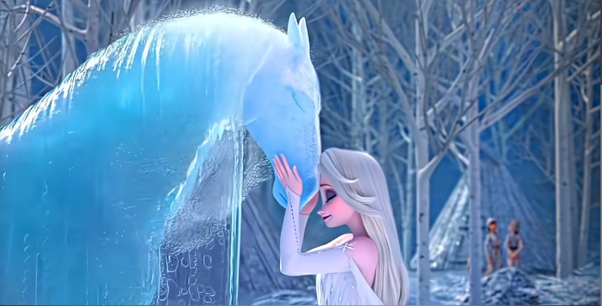

| 中文名 | 诺克（水之灵） |
|---|---|
| 英文名 | Nokk (Water Spirit) |
| 元素 | 水 Water |
| 形态 | 由水构成的马，须像马又能水上/水下活动 |
| 首次登场 | 《冰雪奇缘2》(2019) |
| 登场作品 | 《冰雪奇缘2》《Forest of Shadows》 |
| 配色 | 略偏紫灰+灰蓝灰绿、边缘透明有光舞 |
| 特殊属性 | 生物发光（bioluminescence），闪电击亮 |
| 性格 | 不祥/神秘/危险，却最终顺从艾莎 |
| 原型预兆 | 《Forest of Shadows》结尾梦中的午夜白马 |
诺克是《冰雪奇缘2》的水之灵与勇气试炼者。它是设计最难的角色之一——须像马又须是水，动画师们需要在「马的形态」和「水的流动」之间找到平衡。诺克的性格是「不祥/神秘/危险」的——它代表了「深水」的「未知」和「危险」。但它最终顺从了艾莎——这象征着「自然」对「勇气」和「理解」的「回应」。诺克是艾莎前往阿塔霍兰的「坐骑」和「向导」——它带她穿越Dark Sea，前往「记忆的源头」。
诺克的设计是「马」与「水」的结合——它的形态是马，但它的「身体」是由水构成的。这种「结合」是动画师们面临的最大挑战——如何让一个「由水构成的马」既「像马」又「像水」？他们的解决方案是：诺克的「轮廓」是马的，但它的「身体」是流动的水——当它移动时，水会从它的身体上滴落，形成「水的轨迹」；当它静止时，它的身体会「凝固」成马的形态。诺克的配色由蓝软化为略偏紫灰+灰蓝灰绿——这种「冷色调」象征着「深水」的「神秘」和「危险」。它的边缘透明有光舞——当光线穿过它的身体时，会产生「折射」和「发光」的效果。诺克具生物发光隐藏属性——在黑暗中，它的身体会发出幽蓝的光芒；闪电击亮时，光芒会更加耀眼。这种「生物发光」象征着「深水」中的「生命」和「神秘」——在最黑暗的深水中，仍然有「光」的存在。
F2中，艾莎在Dark Sea中遇到了诺克——这是她「勇气」的「试炼」。诺克最初是「敌对」的——它试图把艾莎拖入深水，「淹死」她。但艾莎没有「退缩」——她用「勇气」和「毅力」与诺克「搏斗」，最终「驯服」了它。这一场景是F2最震撼的场景之一——艾莎在Dark Sea的巨浪中与水马「搏斗」，最终用「冰」「固定」了诺克的「身体」，骑上了它。艾莎与诺克的「相遇」象征着「人类与自然的较量」——当人类「勇敢」地面对自然的「危险」时，自然会「认可」人类的「勇气」，并与人类「合作」。诺克最终成为了艾莎的「坐骑」和「向导」——它带她穿越Dark Sea，前往阿塔霍兰，帮助她发现「真相」。这种「从敌对到合作」的转变，象征着「自然」对「勇气」和「理解」的「回应」。
诺克的角色意义在于「神秘的深水」与「勇气的试炼」。作为「神秘的深水」的化身，诺克代表了「水」的「未知」和「危险」——深水是「深不可测」的，它隐藏着「秘密」和「真相」，也隐藏着「危险」和「死亡」。诺克的「神秘」和「危险」象征着「真相」的「代价」——要发现「真相」，就必须「勇敢」地面对「危险」。作为「勇气的试炼者」，诺克是艾莎「勇气」的「试金石」——它试图把艾莎拖入深水，但艾莎用「勇气」和「毅力」「驯服」了它。这一「试炼」象征着「成长」的「代价」——要「成长」，就必须「勇敢」地面对「恐惧」和「危险」。诺克最终顺从了艾莎——这象征着「自然」对「勇气」和「理解」的「回应」。当人类不再「恐惧」自然，而是「勇敢」地面对自然、「理解」自然时，自然也会以「合作」回应人类。诺克成为艾莎的「坐骑」，象征着「人类与自然的和谐共处」——这也是「第五灵」的「使命」。